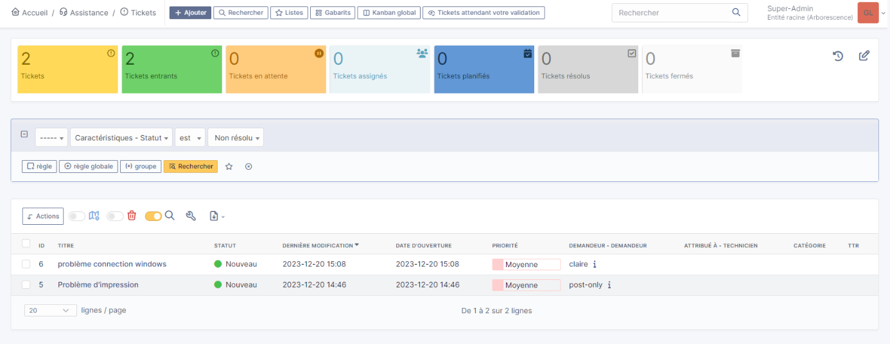
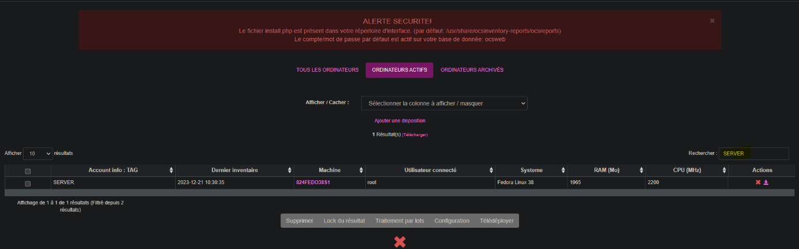
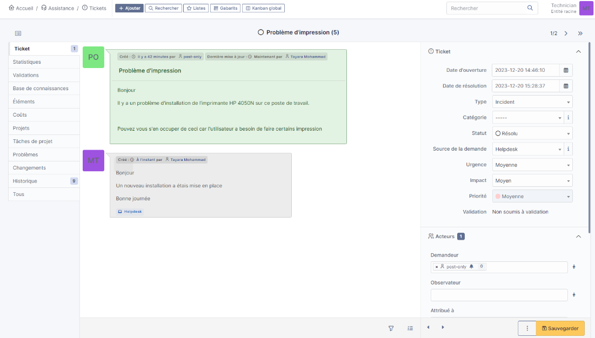

OCS Inventory et GLPI
Contexte :
Nous étions en duo pour cet atelier.
Il y avait comme objectif de mettre en place une plateforme de ticket (GLPI), et de pouvoir récupérer des informations logicielles avec OCS Inventory. L'OCS inventory et GLPI sur un serveur fedora et une version cliente d'OCS Inventory afin de récupérer les informations liées à la machine.
Notre rôle était de fournir un tutoriel d'installation de ces 2 systèmes avec des différentes présentations de fonctionnalité.

Environnement technologique :
- Firefox
- VM sphere
- Fedora
- GLPI
- OCS Inventory
- WinScp
compétences mobilisées :
- B1.1.1 : Recenser et identifier les ressources numériques
Mise en place et utilisation d'OCS Inventory afin de récupérer les informations logicielles de l'utilisateur.
Nous avons pu installer sur les postes clients et le relié à notre serveur fedora. Cela nous a permis de faire remonter les logicielles installer sur la machine et de pouvoir les voir et listes les machines sur l'interface web.

- B1.2.1 : Collecter, suivre et orienter des demandes
Utilisation de GLPI afin de réaliser des tickets à l'aide de l'interface web, de réaliser des questions pour récupérer les informations nécessaires afin d'attribuer ce ticket si besoin à un rôle approprié.

- B1.2.2 : Traiter des demandes concernant les services réseau et système, applicatifs, applicatifs
Réalisation de ticket sur GLPI que nous avons résolue en donnant les informations nécessaires à la correction (différentes manipulation)
- B1.5.3 : Accompagner les utilisateurs dans la mise en place d’un service
Création d'un tutoriel sur l'installation mais aussi la prise en main de certaines fonctionnalités sur GLPI comme la création de ticket lié à un appareil spécifique ou bien l'attribution du ticket à une catégorie précise. Ce tutoriel avait pour rôle d'être le plus précis et compréhensible pour tout type d'utilisateur.